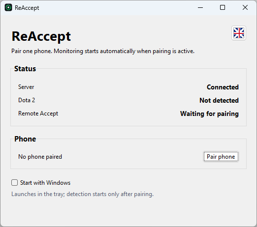
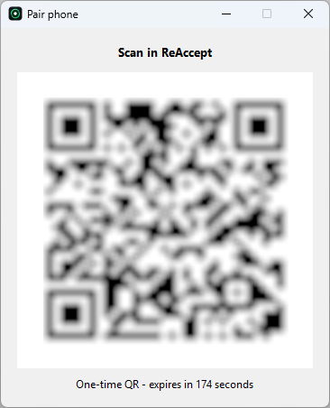
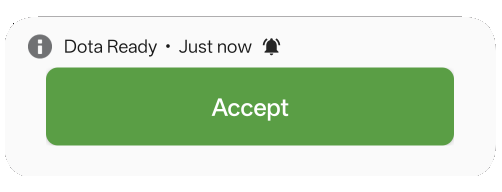
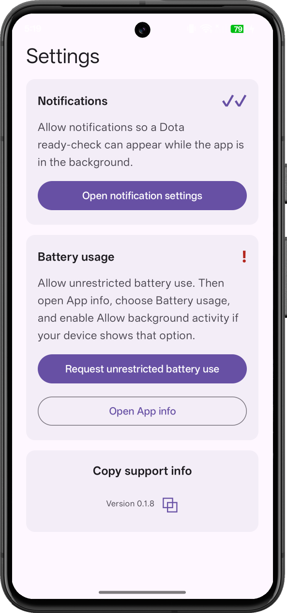
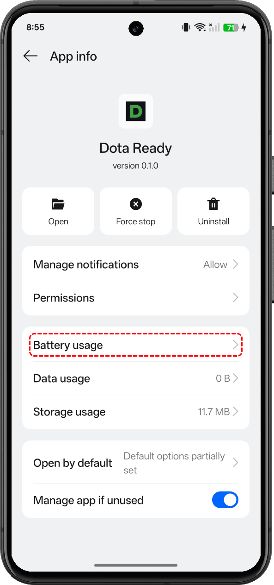
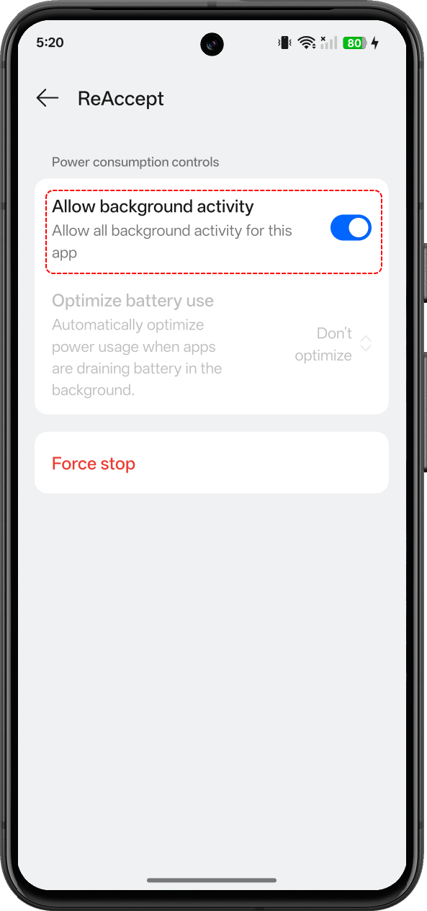

How it works
-
1
Install the desktop agent
Runs quietly in the background while you queue. No border, no overlay, no interference with DX11 or Vulkan.

-
2
Pair your phone
Scan a QR code from the Dota Ready app once. The pairing is per-device and can be revoked at any time.

-
3
Get notified
A ready check appears — your phone buzzes with a push notification immediately.

-
4
Accept from anywhere
Tap Accept in the notification or the app. Your PC clicks the match for you.
Tapping Cancel in the app only dismisses that notification on your phone — it does not decline or cancel the actual Dota 2 match. If you don't act, the ready check just runs its normal course in-game.
Make sure it works in the background
Android aggressively kills background apps by default. For notifications to arrive reliably, exempt Dota Ready from battery optimization and allow background activity in your phone's settings. This takes 30 seconds and is required, not optional.



Features
Works with your setup
DX11 and Vulkan, borderless and windowed, 1920x1080 and 2560x1440.
Locale-independent detection
Recognizes the Accept button regardless of your Dota 2 client language.
No visible capture
No capture border or overlay while you're actually playing.
Just a notification, or a real accept
Notifications are always on. Your first 3 remote accepts are free — after that, subscribe to keep accepting remotely.
Privacy
Dota Ready only looks at your Dota 2 window to detect the ready-check screen. It doesn't read your screen otherwise, doesn't collect gameplay data, and doesn't share data with third parties. Full details in the Privacy Policy.
FAQ
Will this get me banned?
Dota Ready doesn't read game state, doesn't automate gameplay, and doesn't touch memory or the game process. It only detects the ready-check screen from a screenshot and sends a single click — the same thing you'd do yourself. We can't make guarantees about anti-cheat policy, but this is not gameplay automation.
Does it work if my Dota client isn't in English?
Yes. Ready-check detection is locale-independent and doesn't rely on reading any text.
What happens if I'm already at my PC?
Nothing changes — Dota Ready doesn't take over if you're present. It only clicks when the remote accept command actually needs to run.
Will it work if my phone is locked or the app is closed?
Yes, as long as background activity is allowed (see the setup step above). The notification arrives from the background, and accepting from it doesn't require opening the app.
Does dismissing the notification or tapping Cancel decline the match?
No. Swiping away the notification and tapping Cancel in the app only dismiss that notification on your phone — they don't send anything to Dota 2 or cancel the actual ready check. The match itself is unaffected either way.
What's free vs. paid?
Notifications are always free, for every match. You also get 3 remote accepts free, total. After that, you'll still get the notification, but accepting remotely requires a subscription (with a 1-day free trial).